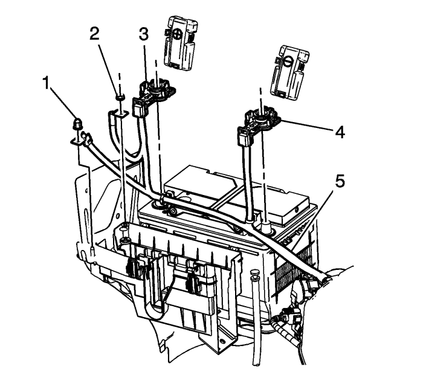
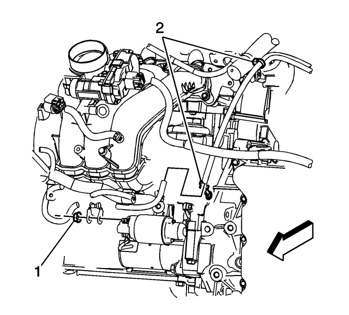
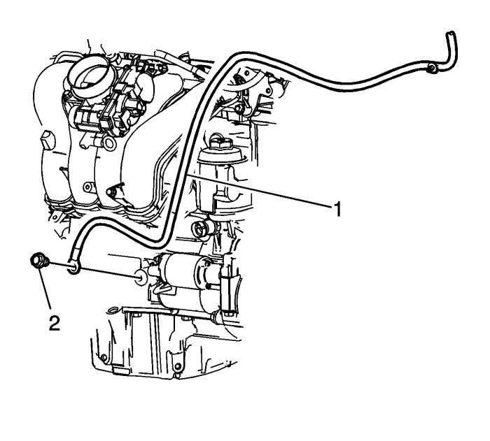
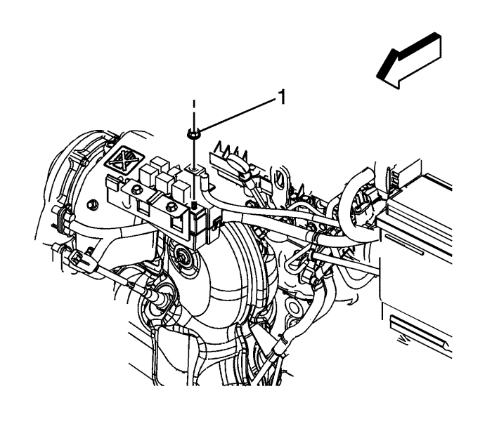
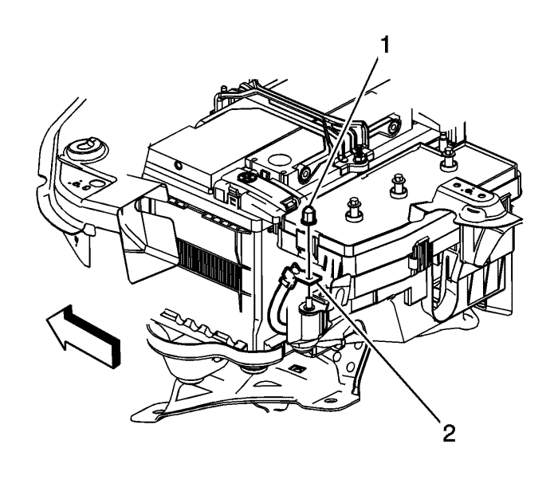
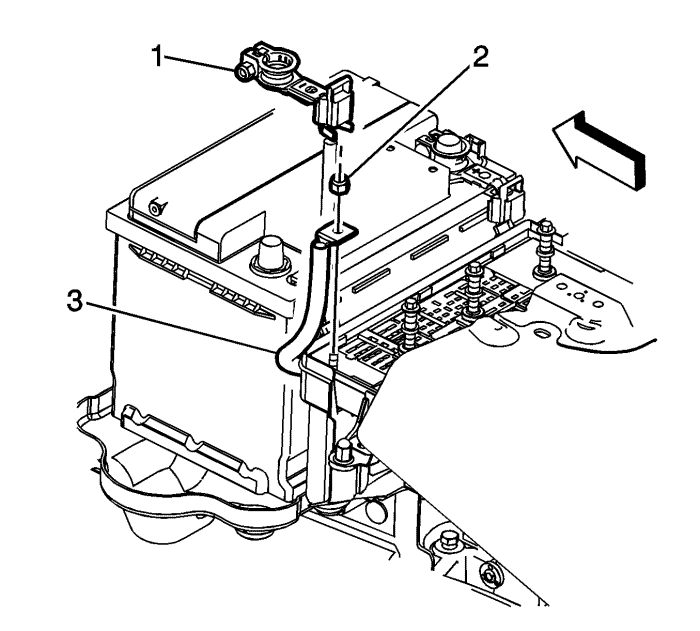
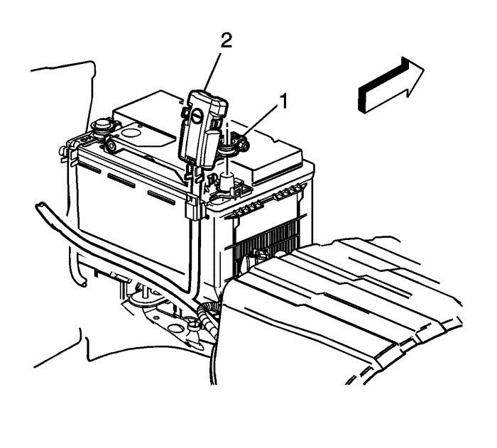

Sustitución del cable positivo y negativo de la batería — LE5
Procedimiento de desmontaje
- Registre todas las estaciones de radio preseleccionadas.

- Desconecte el cable negativo de la batería. Consultar Desconexión y conexión del cable de batería negativo .
- Abra la tapa del bloque de fusibles.
- Desmonte la tuerca del cable negativo de la batería (1) del bloque de fusibles.
- Desmonte la tuerca del cable positivo de la batería (2) del bloque de fusibles.
- Desmonte el borne positivo de la batería (3) de la batería.

- Desmonte la tuerca del cable positivo de la batería (1) del solenoide del motor de arranque.
- Desmonte los seguros del cable positivo de la batería (2).

- Desmonte el perno del cable negativo de la batería (2) del bloque motor.
Nota: Observe cómo se tendieron el cable positivo y el cable negativo de la batería en el compartimento del motor.
- Extraiga el cable positivo y negativo de la batería.
Procedimiento de montaje
Precaución: Consulte Precaución con las fijaciones en la sección Prólogo
- Monte la tuerca del terminal del cable positivo de la batería (1) y el terminal del generador en el solenoide del motor de arranque. Apriete a 10 N·m (89 lib. pulg.).
- Monte el perno del cable negativo de la batería (1) en el bloque del motor y apriételo a 25 N·m (18 lib. pie).

- Monte la tuerca del cable positivo de la batería (1) en el bloque de fusibles del motor y apriételo a 10 N·m (89 lib. pulg.).

- Monte la tuerca y el terminal del cable negativo de la batería (2) al bloque de fusibles y apriete a 12 N·m (106 lib. pulg.).

- Monte el cable positivo de la batería (3) y la tuerca (2) en el bloque de fusibles y apriételo a 12 N·m (106 lib. pulg.).
- Monte el terminal del poste positivo de la batería (1) y apriételo a 10 N·m (89 lib. pulg.).

- Monte el terminal del poste negativo de la batería (1) y apriételo a 10 N·m (89 lib. pulg.).
- Vuelva a establecer los canales programados de la radio.
| © Copyright Chevrolet Europe. All rights reserved |